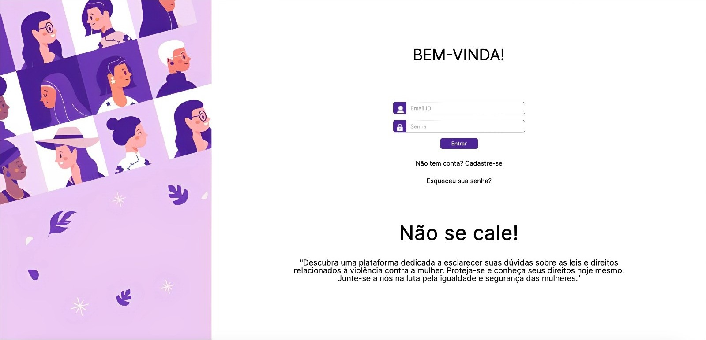

Dispenser de ração automático
Um dos meus primeiros projetos na faculdade. Feito na matéria de TID,
tivemos como tarefa contruir um projeto com arduino para automação de tarefas de casa. Este protótipo dispensa
uma quantidade de ração nos horários inseridos no visor, ajudando muitos donos de pet que precisam ficar fora
de casa por muito tempo
Para mais informações clique aqui
 11.33.37_ae2a450d.jpg)
Cuide-se
Esse foi o melhor projeto que fiz na faculdade. Junto com os alunos de direito, meu grupo ficou com a responsabilidade de criar um site de denúncias e informações que ajudarão as mulheres em momentos de violência. O site conta com algumas funcionalidades como:
- Botão guardião:ao apertar enviará uma mensagem de ajuda para o seu guardião que foi cadastrado no comerço do site.
- Botão patrulha: ao apertar irá enviar um email para a patrulha da mulher de Itabuna.
- Aila: uma inteligência artificial que irá tirar algumas de suas dúvidas.
- Relatos: uma parte somente para as mulheres relatarem algumas experiências que passaram para poder ajudar outras mulheres.
- FAQ: perguntas que normalmente as mulheres podem fazer sobre a violência contra mulher.
- Início: colocamos algumas informações e direitos que as mulheres têm.
Para maior informação clique aqui